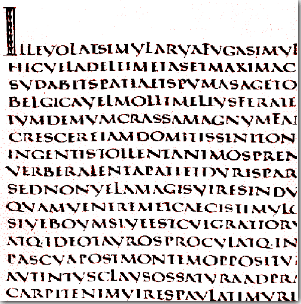

Kapitała
Kapitała – najstarsza forma majuskuły, od której wywodzą się wszystkie późniejsze rodzaje pisma łacińskiego. Jej nazwa jest późniejsza i pochodzi od łacińskiego słowa caput (głowa), bo takim liternictwem pisano nagłówki (capita) tekstów.
Kapitała jest pismem monumentalnym i majestatycznym, przeznaczonym do kucia napisów w kamieniu, powstała bowiem jako pismo epigraficzne. Jest ona jednak również pierwszym krojem zastosowanym do pisania na materiale miękkim. Litery kapitały są symetryczne, rysowane linią o jednakowej grubości, mają jednakową wysokość, spora ich część daje się wpisać w kwadrat lub prostokąt, między innymi: O, C, D, M, N, Q[1]. Trzonki liter są zakończone poprzecznymi kreskami, tzw. szeryfami. Szeryfy, pierwotnie ślady po dłucie kamieniarskim, w późniejszym liternictwie stanowią ozdobniki.
Wyróżniamy dwa rodzaje kapitały: kwadratową (capitalis quadrata, capitalis elegans), używaną najczęściej w epigrafice, oraz chłopską lub wiejską (capitalis rustica), która jest pochodną przemian kapitały kwadratowej po jej przeniesieniu na materiały miękkie[3]. Malowana na murach pędzlem oraz pisana na pergaminie kapitała nabrała lekkości: litery stały się lekko cieniowane – pionowe trzonki grubsze, poziome cieńsze – L, F, Q i V zaczęły wysuwać się poza linie, pojawiły się nieśmiałe zaokrąglenia, wynikające z możliwości szybszego stawiania liter[4]. Powstała w wyniku tych przemian kapitała wiejska jeszcze wyraźniej ukazuje wpływ materiału miękkiego na formę pisma. Od razu daje się zauważyć jego płynność: trzonki liter wygięte są w łuki, kąty stają się mniej ostre, litery tracą symetrię, przyjmując kształt bardziej wydłużony. Skracają się – niekiedy znacznie – poziome trzonki liter, co jest szczególnie widoczne w E i L.
Czytanie tekstów zapisanych kapitałą – zarówno kwadratową, jak i wiejską – mocno utrudnia fakt, że nie stosowano odstępów między wyrazami ani znaków interpunkcyjnych (np. "GALIAESTOMNISDIVISAINPARTESTRES"). W początkowej fazie rozwoju kapitały na oznaczenie samogłosek długich zamiast akcentów stosowano podwajane litery (np. MAARCO).
Kapitała używana była również w średniowieczu — za jej pomocą zaznaczano w księgach m.in. inicjały, tytuły, ważne fragmenty tekstu czy też cytaty.